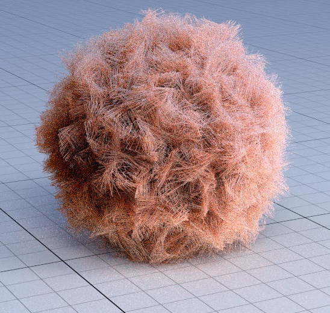

Hair Rendering in Photo-Realistic Rendering
 Link to the Github Project: Hair Rendering
Advisor: Fabio Pellacini, Full Professor in Computer Science at Sapienza University of Rome, former research division of Pixar Animation Studios
The project has the goal to provide to the yocto library the hair scattering implementation presented in Matt Pharr's paper, one of the author of the pbrt book. The yocto library yocto-gl) is owned by our Professor Fabio Pellacini.
The yocto renderer treats hair as a surface. While this could be a fair approximation in some cases, the paper's approach treats it as a volume computing the hair scattering inside the hair itself considering it as a cylinder with unit radius.
The key parameters for the output images are represented by the the two different roughness values and the sigma. The roughness is not unique, since we are considering two planes, we need two roughnesses: -Azimuthal Roughness (beta_n) -Longitudinal Rougness (beta_m) The sigma has been converted into a vec3f, while the paper's implementation treats it as a Spectrum, and represents the absorption term. This is what gives the hair and the fur its color.